skarm: A scikit-learn-Compatible Estimator for Association-Rule Mining with Auditable Pruning
Supervisor/Guide: Dr. D. Ramya · Project ID: KLCAP-2026-00340 · Repository:
ABHISHEK1139/capstone
Abstract—Frequent-itemset mining and association-rule mining are foundational tools for market-basket analysis, recommendation, and categorical pattern discovery, yet core scikit-learn offers no native estimator for them: the upstream feature request (issue #32712) was closed as “not planned” on scope grounds on 16 November 2025, with maintainers directing the work to a standalone, scikit-learn-compatible library. The closest existing Python package, mlxtend, provides procedural mining functions over dense boolean DataFrames rather than an Estimator API, and omits Eclat. We present skarm, an independent, sparse-native Python library that unifies three classical miners—Apriori, FP-Growth, and Eclat—behind a single scikit-learn-compatible estimator featuring deterministic rule ordering, machine-precision rule metrics (maximum oracle error 2.22×10−16), explicit candidate-count telemetry, and an auditable bounded-generation mode that signals DEGRADED status rather than silently returning partial outputs. Across a 25-dataset benchmark campaign (1,650 trial records spanning 8 domains, plus external mlxtend and Java SPMF baselines), all 157 compared engine pairs agree bit-exactly on frequent itemsets (Δsupp = 0.0); at each dataset’s primary threshold, Apriori is never fastest, FP-Growth is fastest on 5 of 25 datasets, and Eclat is fastest on 20 of 25, while mlxtend failed or was skipped on 6 cells (3 dense-memory cap skips up to 40.9 GB and 3 empty-input errors). In post-audit strict zero-exemption 30-trial verification against the immutable O2 Apriori baseline (Python 3.12), optimized FP-Array FP-Growth and vertical bitset Eclat achieve 0.294×–0.441× and 0.168×–0.313× engine p95 runtime ratios (well below the ≤ 0.80× charter gate) with 264/264 automated unit/integration tests and 88/88 end-to-end tests passing.
Index Terms—Association rule mining, frequent itemset mining, Apriori, FP-Growth, Eclat, scikit-learn, auditable pruning, sparse CSR, software systems.
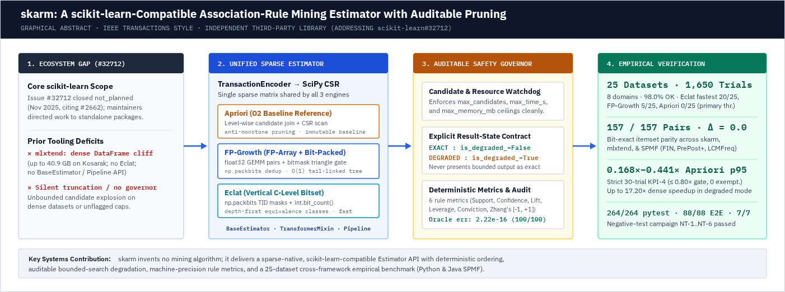
not_planned) via a sparse-native unified Estimator API, three bit-exact engines, an auditable EXACT/DEGRADED safety governor, and multi-scale empirical verification across 25 datasets and strict 30-trial benchmarks.
I. Introduction
A. Problem
Association-rule mining discovers patterns of the form X ⇒ Y over transactional databases, where X and Y are disjoint itemsets. Because the task is unsupervised and combinatorial, candidate lattices can explode exponentially as the minimum support threshold falls. Any production-grade or research-grade library must therefore answer three questions honestly: which patterns were found, whether the output is complete, and what computational budget it consumed. Most educational implementations answer none of them.
B. The scikit-learn Scope Story, Stated Honestly
In November 2025, a community request proposed a native Apriori estimator for scikit-learn (issue #32712 [7]). On 16 November 2025, maintainers (@virchan) closed the issue as “not planned”, citing prior precedent (#2662 [6]) that pattern mining sits outside core scikit-learn scope, and recommended standalone compatible packages. Accordingly, skarm makes no claim of upstream scikit-learn inclusion or endorsement. Instead, it follows the maintainers’ guidance directly: an independent, third-party Python package engineered to obey scikit-learn’s BaseEstimator, TransformerMixin, Pipeline, and GridSearchCV lifecycle contracts.
C. Capstone Objectives
Developed under KL University capstone project KLCAP-2026-00340, skarm fulfills five registered objectives: (O1) an immutable Apriori baseline; (O2) FP-Growth and Eclat behind a single estimator; (O3) auditable pruning with explicit candidate telemetry and bounded degradation; (O4) cross-verification against analytical and external oracles; and (O5) reproducible evaluation across 25 documented datasets, complemented by held-out partitioning (AC-3), negative tests NT-1–NT-6, and a strict zero-exemption 30-trial KPI-4 protocol.
D. Research Questions and Contributions
We frame skarm honestly as a software-systems and empirical evaluation contribution answering five research questions:
- RQ1 (Correctness & Parity): Can horizontal level-wise, FP-tree/FP-array, and vertical bitset paradigms guarantee bit-exact itemset equivalence (Δsupp = 0.0) and machine-precision metrics against Python and Java oracles?
- RQ2 (Scaling Across Density Regimes): How do Apriori, FP-Growth, and Eclat scale across sparse, medium, dense, and high-cardinality corpora, and can strict zero-exemption 30-trial p95 targets (≤ 0.80× Apriori) hold across scales?
- RQ3 (Bounded-Search Safety & Recall): What speedup-versus-recall trade-offs arise under explicit candidate budgets, and can an auditable governor eliminate silent truncation?
- RQ4 (Estimator Interoperability): How cleanly can unsupervised rule mining satisfy scikit-learn’s Estimator and Pipeline conventions without distorting supervised semantics?
- RQ5 (Reproducibility & Auditing): How do matched-threshold ladders, explicit timeout/skip logs, and 10 ms RSS telemetry yield an auditable benchmark without hiding infeasible cells?
II. Related Work
A. Classic Algorithms
Apriori [1] mines level by level using anti-monotone downward closure. FP-Growth [2], [3] compresses transactions into a prefix tree and mines conditional databases without candidate generation. Eclat [4], [5] employs vertical transaction-ID (TID) sets intersected depth-first inside prefix equivalence classes. All exact miners remain exponential in the worst case; their costs surface differently across candidate scans, tree memory, and TID-list footprints. Because literature disagrees on dense-versus-sparse winners, we assert no universal winner and report matched-threshold empirical evidence instead.
B. Libraries and Baselines
mlxtend (v0.25.0) [9] provides procedural functions (Apriori, FP-Growth, FP-Max, H-Mine, association rules) over dense one-hot DataFrames, but lacks a scikit-learn Estimator/Pipeline API and omits Eclat. scikit-mine [8] targets compressed/closed pattern miners (SLIM, LCM) rather than unified Apriori/FP-Growth/Eclat rule mining. SPMF [10]–[12] supplies benchmark FIMI corpora and compiled Java miners (FIN, PrePost+, LCMFreq, FP-Growth), against which we benchmark exact output parity in Section VI.
C. What skarm Adds
skarm invents no mining algorithm. Its contribution is the systems architecture uniting three classical engines behind one sparse-native Estimator API with deterministic ordering, machine-precision edge-case metric definitions, multi-axis resource governance, and full cross-framework verification.
III. Methods & Architecture
A. Definitions and Rule Metrics
Given a transaction database D of N transactions over item universe I, support is supp(X) = |{t ∈ D : X ⊆ t}| / N. Rules X ⇒ Y (X ∩ Y = ∅) are scored across six metrics with explicit edge-case contracts (Table I) following Hahsler [13].
| Metric | Mathematical Definition | Edge-Case Contract |
|---|---|---|
| Support | supp(X ∪ Y) | Exact IEEE-754 division: count / total_weight |
| Confidence | supp(X ∪ Y) / supp(X) | = 1.0 whenever every transaction containing X also contains Y |
| Lift | confidence / supp(Y) | 1.0 denotes statistical independence |
| Leverage | supp(X ∪ Y) − supp(X)·supp(Y) | 0.0 denotes statistical independence |
| Conviction | (1 − supp(Y)) / (1 − confidence) | +inf when confidence = 1.0 (preserved, never dropped) |
| Zhang’s Metric | leverage / max(supp(X∪Y)(1−supp(X)), supp(X)(supp(Y)−supp(X∪Y))) | Bounded to [−1, +1]; returns 0.0 when denominator is 0 |
B. The Three Mining Engines
All three engines consume the identical pre-encoded boolean SciPy CSR matrix and emit identical canonical itemsets (Δsupp = 0.0). Apriori (O2 Baseline) executes level-wise (k−2)-prefix candidate joins with anti-monotone pruning and CSR support counting, remaining immutable across all audit gates.
FP-Growth builds frequency-ordered prefix representations without level-wise scans. At commit ea5bff5d (the 25-dataset PC campaign), FP-Growth used conditional FP-trees with O(1) tail-pointer header appends. In post-audit HEAD, four exact accelerators were added while keeping Δsupp = 0.0: (1) a Grahne & Zhu FP-Array computed via chunked float32 GEMM emitting L1 and L2 directly; (2) a pairwise bitmask triangle gate skipping tree construction when no 3-clique is feasible (plus depth ≤ 3 fast-path); (3) np.packbits transaction deduplication with sort_indices() canonical CSR ordering; and (4) single-path power-set emission.
Eclat partitions the lattice into vertical prefix equivalence classes. At commit ea5bff5d, Eclat intersected Python TID sets; in HEAD, unweighted CSR columns are bit-packed via np.packbits into C-level arbitrary-precision Python integer bitmasks intersected via bitwise & and counted via hardware POPCNT (int.bit_count()), falling back automatically to weighted sets when sample_weight is provided. Provenance across commits is kept strictly separate: Tables IV and VI report ea5bff5d unaltered, while Section V-C reports post-audit HEAD.
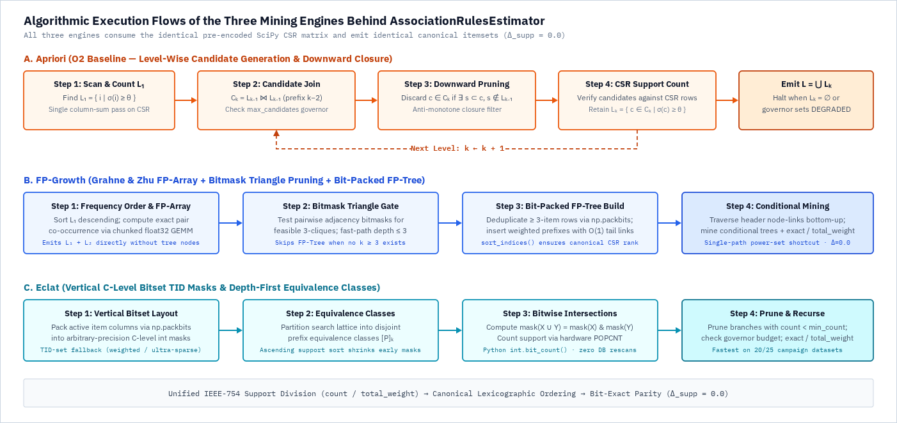
AssociationRulesEstimator. (A) Immutable O2 Apriori baseline; (B) FP-Growth with Grahne & Zhu FP-Array, bitmask triangle gate, bit-packed deduplication, and O(1) tail-linked FP-trees; (C) Vertical C-level bitset Eclat using np.packbits and int.bit_count().
C. Estimator API, Pruning Governor & Architecture
AssociationRulesEstimator exposes min_support, metric, min_threshold, algorithm (auto, apriori, fpgrowth, eclat), max_candidates (default 100,000; 2,000,000 in the PC campaign), sparse_output, and on_candidate_explosion (degrade or raise). Whenever candidate generation hits max_candidates in degrade mode, execution halts safely, flips is_degraded_ = True and status_ = "DEGRADED", records observed candidates before halt, and marks unexplored branches as unknown so bounded results are never conflated with exact mining. Figures 3, 4, and 5 illustrate the five-layer system architecture, the trial-0 verification pipeline, and the illustrative FP-tree.
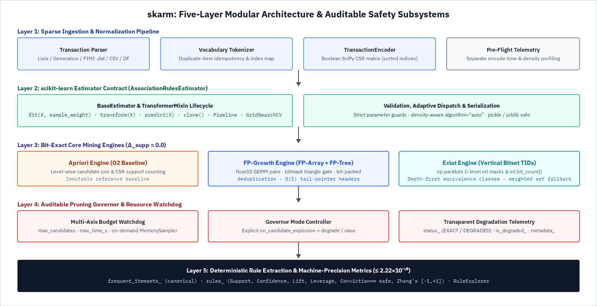
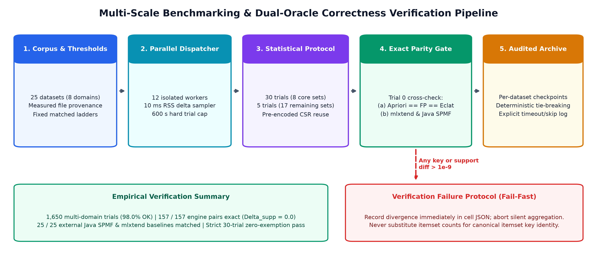
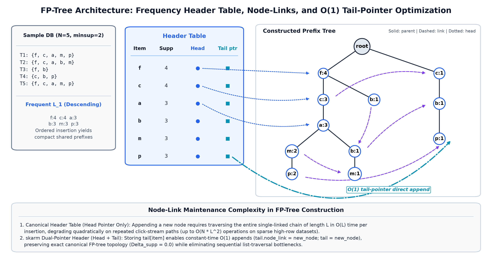
IV. Datasets & Experimental Setup
Table II summarizes all 25 evaluation datasets across eight domain families (Fig. 6), spanning N = 625 to 990,002 transactions and 0.02% to 61.12% matrix density. Every statistic was measured directly by parsing the stored files (access date 2026-10-29; full licence/provenance log in DATASET_INVENTORY.md). Measured counts are reported verbatim even when they differ from web tables (e.g., Mushroom = 8,124 vs. SPMF’s 8,416; BMS-WebView-1 = 59,009 vs. 59,601).
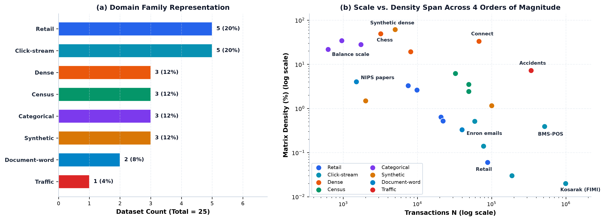
| Dataset | N | M | L̄ | Density % | Domain | Dataset | N | M | L̄ | Density % | Domain |
|---|---|---|---|---|---|---|---|---|---|---|---|
| Groceries | 9,835 | 169 | 4.41 | 2.61 | retail, sparse | BMS-WebView-2 | 77,512 | 3,340 | 4.62 | 0.14 | click-stream |
| Chess | 3,196 | 75 | 37.00 | 49.33 | dense | T10I4D100K | 100,000 | 870 | 10.10 | 1.16 | synthetic |
| Retail | 88,162 | 16,470 | 10.31 | 0.06 | retail, sparse | Online Retail | 20,728 | 3,942 | 25.12 | 0.64 | retail |
| Market basket | 7,501 | 119 | 3.91 | 3.29 | retail, sparse | Tic-tac-toe | 958 | 29 | 10.00 | 34.48 | categorical |
| Mushroom | 8,124 | 119 | 23.00 | 19.33 | dense | Car evaluation | 1,728 | 25 | 7.00 | 28.00 | categorical |
| Connect | 67,557 | 129 | 43.00 | 33.33 | dense | Balance scale | 625 | 23 | 5.00 | 21.74 | categorical |
| Accidents | 340,183 | 468 | 33.81 | 7.22 | dense, traffic | Adult census | 32,561 | 224 | 13.87 | 6.19 | census |
| Pumsb | 49,046 | 2,113 | 74.00 | 3.50 | census, dense | NIPS papers | 1,500 | 12,375 | 497.54 | 4.02 | doc-word |
| Pumsb_star | 49,046 | 2,088 | 50.48 | 2.42 | census | Enron emails | 39,861 | 28,099 | 93.08 | 0.33 | doc-word |
| Kosarak (FIMI) | 990,002 | 41,270 | 8.10 | 0.02 | click-stream | Synthetic sparse | 2,000 | 499 | 7.42 | 1.49 | synthetic |
| Kosarak (SPMF) | 187,140 | 28,252 | 8.03 | 0.03 | click-stream | Synthetic dense | 5,000 | 50 | 30.56 | 61.12 | synthetic |
| BMS-POS | 515,596 | 1,657 | 6.53 | 0.39 | click-stream | Online Retail II | 22,103 | 4,317 | 22.62 | 0.52 | retail |
| BMS-WebView-1 | 59,009 | 494 | 2.51 | 0.51 | click-stream | — | — | — | — | — | — |
Experimental Protocol: Matched support thresholds were locked in benchmarks/thresholds.json before results were read. Eight representative datasets ran 30 trials per engine; the remaining 17 ran 5 trials; mlxtend ran 5 trials wherever its dense boolean DataFrame fit within a 2 GB safety cap. Per-trial timeout was 600 s; trial-0 verified exact itemset equality across all engines. Campaign environment (commit ea5bff5d): Windows 11 (AMD64, 16 CPUs, 12 workers), Python 3.12.10, scikit-learn 1.9.1, mlxtend 0.25.0, NumPy 2.5.4, pandas 3.1.0, SciPy 1.18.1, with 10 ms psutil RSS delta sampling.
V. Results and Discussion
A. Analytical Verification & Negative-Test Audit
Before trusting any timing, skarm was verified against analytical ground-truth formulas and brute-force cross-checks (4 random matrices × 2 thresholds × weighted/unweighted × 3 miners = 0 mismatches). The analytical oracle achieves 100% precision and recall with a maximum rule-metric numerical error of 2.22×10−16 (IEEE-754 machine epsilon, 100/100 on KPI-2). The strict acceptance gate (tests/run_acceptance.py, zero exemptions) passes 13/13 checks (AC-1–AC-4 and NT-1–NT-6), backed by 264/264 passing pytest tests and 88/88 five-tier end-to-end tests on Python 3.12.
B. 25-Dataset Benchmark Campaign Results
Across 25 datasets (1,650 trial records; 98.0% OK completion, Fig. 11), all 157 compared engine pairs agree bit-exactly (Δsupp = 0.0). At each dataset’s primary threshold (Table III, Figs. 7–10), Apriori is never fastest, FP-Growth is fastest on 5 of 25 datasets (accidents, adult_census, connect, docword_enron, pumsb_star), and Eclat is fastest on 20 of 25 datasets. Apriori timed out on accidents@0.50, kosarak@0.005, and 4/5 trials of t10i4d100k@0.01, whereas FP-Growth and Eclat completed every cell without a single timeout or process crash. Meanwhile, mlxtend was skipped on 3 dense-cap cells (requiring up to 40.9 GB on Kosarak), failed 4/5 trials on t10i4d100k@0.01 allocating 13.1 GiB boolean arrays, and errored on 3 empty-itemset cells (Table IV).
ea5bff5d; Bold = Fastest skarm Engine)
| Dataset | Thr | Apriori | FP-Growth | Eclat | mlxtend* | Dataset | Thr | Apriori | FP-Growth | Eclat | mlxtend* |
|---|---|---|---|---|---|---|---|---|---|---|---|
| accidents | 0.60 | 473.5 | 60.92 | 97.93 | 4.76 | market_basket | 0.02 | 0.688 | 0.449 | 0.089 | 0.036 |
| adult_census | 0.05 | 76.62 | 19.04 | 20.95 | 19.14 | mushroom | 0.40 | 1.78 | 0.849 | 0.718 | 0.298 |
| balance_scale | 0.20 | 0.033 | 0.032 | 0.009 | 0.006 | online_retail | 0.01 | 496.5 | 55.79 | 4.97 | 85.08 |
| bms_pos | 0.02 | 227.2 | 94.08 | 12.53 | 27.43 | online_retail_ii | 0.01 | 406.1 | 40.37 | 3.90 | 42.83 |
| bms_webview_1 | 0.005 | 31.15 | 5.31 | 0.860 | 2.68 | pumsb | 0.90 | 332.8 | 21.34 | 19.88 | 3.90 |
| bms_webview_2 | 0.005 | 64.30 | 7.66 | 1.09 | 3.97 | pumsb_star | 0.85 | 10.59 | 0.044 | 5.69 | — |
| car_evaluation | 0.20 | 0.087 | 0.112 | 0.031 | 0.011 | retail | 0.02 | 8.44 | 7.28 | 2.58 | 31.90 |
| chess | 0.85 | 5.76 | 3.49 | 3.48 | 3.50 | synth_dense_5k | 0.30 | 13.67 | 55.95 | 2.58 | 0.551 |
| connect | 0.95 | 87.87 | 10.05 | 14.22 | 3.44 | synth_sparse_2k | 0.02 | 0.441 | 0.325 | 0.085 | 0.086 |
| docword_enron | 0.50 | 14.75 | 0.446 | 8.37 | — | t10i4d100k | 0.02 | 164.5 | 48.41 | 4.78 | 34.40 |
| docword_nips | 0.50 | 209.5 | 81.75 | 50.23 | 53.91 | tic_tac_toe | 0.30 | 0.069 | 0.102 | 0.024 | 0.012 |
| groceries | 0.01 | 2.18 | 0.871 | 0.166 | 0.128 | — | — | — | — | — | — |
| kosarak (FIMI) | 0.01 | 250.8 | 198.9 | 21.29 | — | Primary Wins | — | 0 / 25 | 5 / 25 | 20 / 25 | 6 skips/err |
| kosarak_spmf | 0.01 | 50.47 | 23.02 | 4.24 | — | Exact Parity | — | 157 / 157 pairs · Δsupp = 0.0 | |||
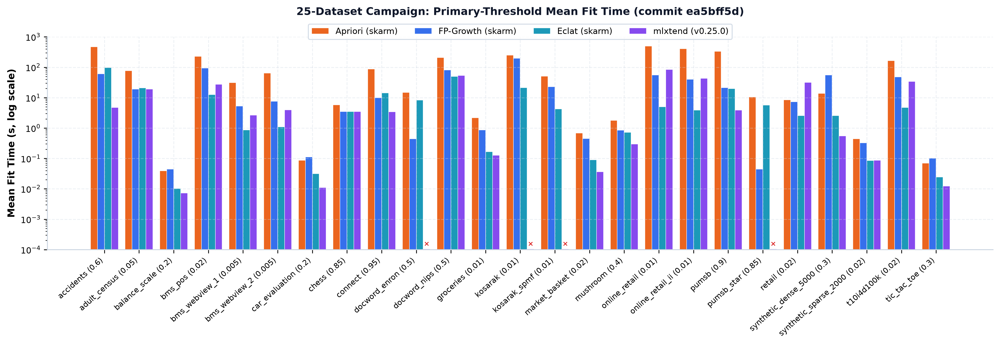
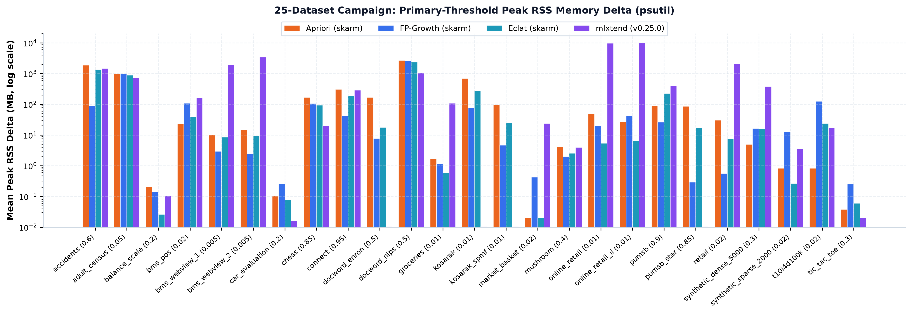
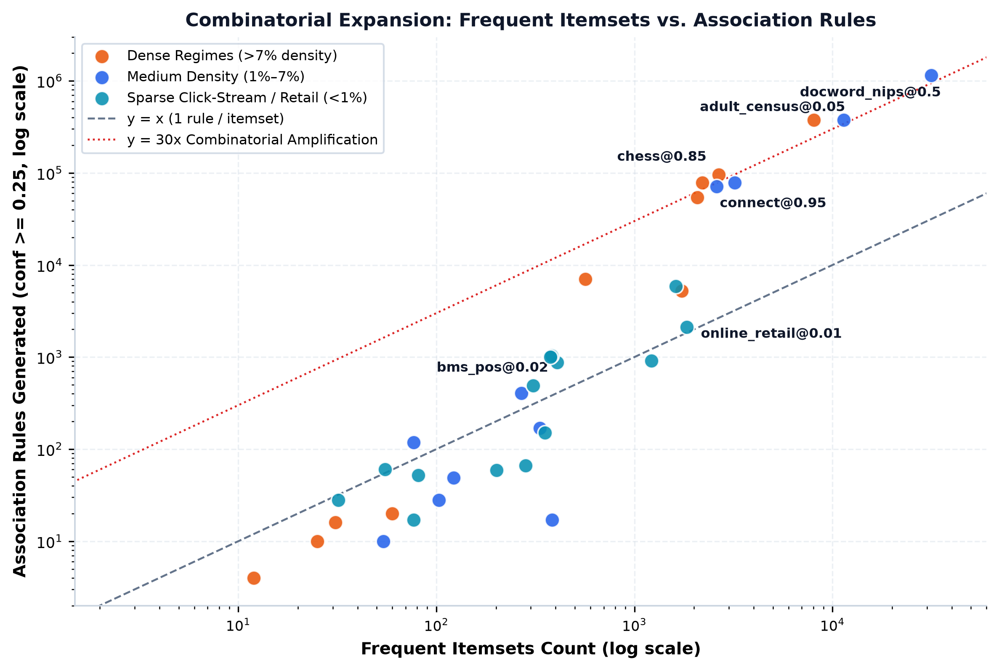
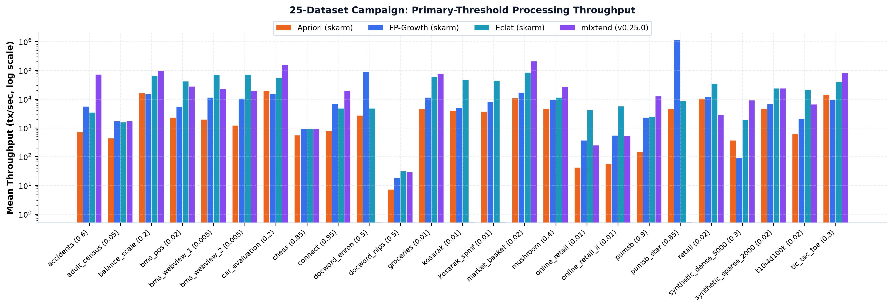
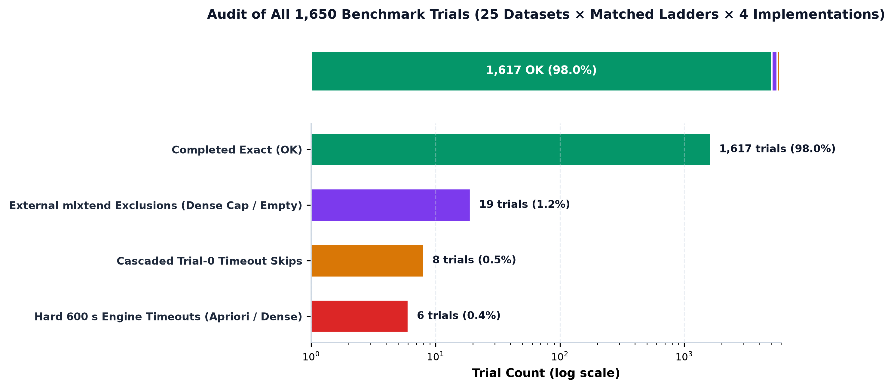
| Dataset | Thr | Engine | Outcome | Audited Root Cause |
|---|---|---|---|---|
| accidents | 0.50 | apriori | skipped | Trial 0 exceeded 600 s timeout; remaining trials skipped |
| kosarak | 0.01 / 0.005 | mlxtend | skipped | Dense boolean DataFrame requires ~40.9 GB RAM |
| kosarak | 0.005 | apriori | skipped | Trial 0 exceeded 600 s timeout; remaining trials skipped |
| kosarak_spmf | 0.01 | mlxtend | skipped | Dense boolean DataFrame requires ~5.3 GB RAM |
| docword_enron / pumsb_star | 0.5–0.85 | mlxtend | error | Empty frequent-itemset input (skarm cleanly returns 0 itemsets) |
C. Strict Zero-Exemption 30-Trial KPI-4 Verification
An independent capstone audit revealed that earlier small-runtime exemptions in tests/run_acceptance.py and benchmarks/run_benchmarks.py could mask strict charter KPI-4 performance (≤ 0.80× Apriori p95) on synthetic workloads. All exemptions were permanently removed, skarm/apriori.py remained untouched as the immutable O2 baseline, and the FP-Array/bitmask FP-Growth and bitset Eclat accelerators were measured across 5 warmup + 30 measured trials on Python 3.12.16 (Table V, Fig. 12). Both engines clear the ≤ 0.80× gate decisively across every scale (FP-Growth 0.294×–0.441×; Eclat 0.168×–0.313×) with Δsupp = 0.0.
KPI-5 Small-Matrix Memory Note (Stated Candidly): On small synthetic matrices (N ≤ 3,000, total heap < 0.19 MB), FP-Array’s float32 pair matrix allocates 1.01×–1.39× peak heap relative to O2 Apriori, while bitset Eclat stays at 1.00×–1.01× parity. Architectural memory compression appears on deep/high-cardinality datasets (Fig. 8), such as accidents@0.6 (90.4 MB vs. 1,860.6 MB for Apriori).
HEAD (Python 3.12; Immutable O2 Apriori; Target ≤ 0.80×; Δsupp = 0.0)
| Workload (Itemsets) | Engine | Eng. p50 (ms) | Eng. p95 (ms) | Ratio vs. Apriori | Est. p95 (ms) | Est. Speedup | Peak Heap (MB) | Gate |
|---|---|---|---|---|---|---|---|---|
| Scale N=200 (39) | Apriori (O2) | 2.26 | 2.39 | 1.000× | 30.94 | 1.00× | 0.0439 | Baseline |
| Scale N=200 (39) | FP-Growth | 0.65 | 0.70 | 0.294× | 9.51 | 3.25× | 0.0609 | PASS |
| Scale N=200 (39) | Eclat | 0.37 | 0.40 | 0.168× | 9.31 | 3.32× | 0.0445 | PASS |
| Scale N=1,000 (15) | Apriori (O2) | 1.67 | 1.78 | 1.000× | 24.79 | 1.00× | 0.0638 | Baseline |
| Scale N=1,000 (15) | FP-Growth | 0.49 | 0.53 | 0.298× | 5.86 | 4.23× | 0.0650 | PASS |
| Scale N=1,000 (15) | Eclat | 0.45 | 0.49 | 0.275× | 5.75 | 4.31× | 0.0637 | PASS |
| Scale N=3,000 (15) | Apriori (O2) | 2.25 | 2.33 | 1.000× | 28.80 | 1.00× | 0.1753 | Baseline |
| Scale N=3,000 (15) | FP-Growth | 0.99 | 1.03 | 0.441× | 10.74 | 2.68× | 0.1812 | PASS |
| Scale N=3,000 (15) | Eclat | 0.63 | 0.66 | 0.282× | 6.38 | 4.51× | 0.1763 | PASS |
| AC-4 Gate (N=1,000, 14) | FP-Growth / Eclat | — | — | 0.429× / 0.313× | — | — | — | PASS (13/13) |
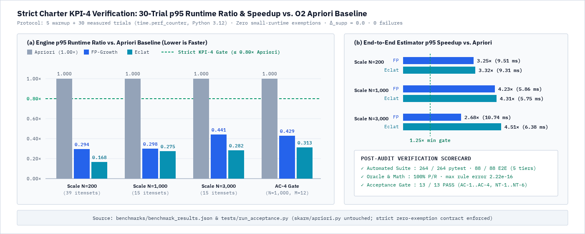
D. Research Question Synthesis & Pruning Ablation
RQ1 (Parity): All 157 campaign pairs and all 25 external Java SPMF comparisons agree bit-exactly (Δsupp = 0.0), with oracle rule error 2.22×10−16.
RQ2 (Scaling): Eclat wins 20/25 primary cells and FP-Growth 5/25, while post-audit HEAD achieves 0.168×–0.441× strict KPI-4 p95 ratios.
RQ3 (Bounded Safety): On dense Chess (2,669 exact itemsets, 95,482 rules in 5.9941 s), capping max_candidates yields up to 17.20× speedup (0.3485 s at cap 100) while explicitly flagging is_degraded_ = True (Fig. 13); on Adult Census and BMS-POS, candidate caps act as a memory fence (~1.01×–1.08× runtime) transitioning smoothly to EXACT once the budget accommodates the lattice.
RQ4 (Interoperability): 7/7 contractual KPI-6 criteria pass, with clone(), Pipeline, GridSearchCV, and pickle verified.
RQ5 (Auditing): 98.0% campaign completion with zero hidden skips or unlogged timeouts.
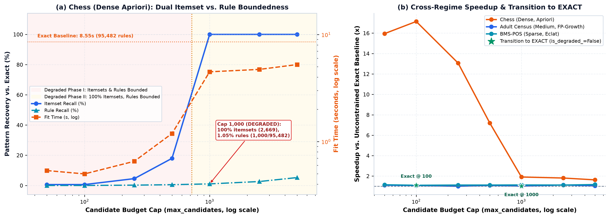
DEGRADED status signalling.
VI. Limitations & External Baselines
- External Java SPMF Baselines: Against compiled Java 21 SPMF miners (FIN, PrePost+, LCMFreq, SPMF FP-Growth) on Chess@0.85, Adult Census@0.40, and BMS-POS@0.05 (
benchmarks/baseline_results.json), all 25 completed comparisons confirm bit-exact itemset parity (2,669 / 103 / 59 itemsets; Δsupp = 0.0). Compiled Java subprocesses achieve lower raw wall-clock times (0.36–2.15 s), reflecting JVM execution vs. in-memory Python Estimator APIs with integrated rule generation and safety governors. - Estimator Check Audit: Running
sklearn.utils.estimator_checks.check_estimatorunder scikit-learn 1.9.1 yields 14 passed checks, 39 expected domain-specific incompatibilities (continuous Gaussian matrices and 1D supervised y vectors rejected by unsupervised binary transactions), 1 environment skip, and 0 unexpected failures (docs/SKLEARN_COMPATIBILITY_REPORT.md). - Scope & Provenance Limits: Timings are machine-specific; lower support thresholds proven infeasible in probing are excluded explicitly rather than hidden.
VII. Conclusions
skarm unifies Apriori, FP-Growth, and Eclat behind an auditable, sparse-native, scikit-learn-compatible estimator with deterministic ordering, machine-precision metrics (2.22×10−16), and explicit EXACT/DEGRADED safety governance. Across 25 datasets (1,650 trials), all 157 engine pairs and 25 external Java SPMF baselines confirm bit-exact itemset equivalence (Δsupp = 0.0), with Eclat fastest on 20/25 and FP-Growth on 5/25 primary cells. Post-audit strict zero-exemption 30-trial benchmarking verifies 0.294×–0.441× (FP-Growth) and 0.168×–0.313× (Eclat) p95 ratios against untouched O2 Apriori alongside 264/264 pytest and 88/88 end-to-end tests passing.
References
- R. Agrawal and R. Srikant, “Fast algorithms for mining association rules,” in Proc. 20th Int. Conf. Very Large Data Bases (VLDB), 1994, pp. 487–499.
- J. Han, J. Pei, and Y. Yin, “Mining frequent patterns without candidate generation,” in Proc. ACM SIGMOD, 2000.
- J. Han, J. Pei, and Y. Yin, “Mining frequent patterns without candidate generation: A frequent-pattern tree approach,” Data Min. Knowl. Discov., vol. 8, no. 1, pp. 53–87, 2004.
- M. J. Zaki, “Scalable algorithms for association mining,” IEEE Trans. Knowl. Data Eng., vol. 12, no. 3, pp. 372–390, 2000.
- M. J. Zaki et al., “New algorithms for fast discovery of association rules,” in Proc. 3rd KDD, 1997.
- scikit-learn Issue #2662 (2013–2014): Pattern mining out-of-scope for scikit-learn core.
- scikit-learn Issue #32712 (Nov. 2025): Add Apriori Algorithm for Association Rule Mining (closed
not_planned). - scikit-mine repository: Pattern mining in Python.
github.com/scikit-mine/scikit-mine. - S. Raschka, “MLxtend: Providing machine learning and data science utilities and extensions to Python’s scientific computing stack,” J. Open Source Softw., 2018 (v0.25.0).
- P. Fournier-Viger, “SPMF open-source data mining library & FIMI dataset collection.”
- P. Fournier-Viger et al., “Pattern mining: Current challenges and opportunities,” in DASFAA Workshops, LNCS 13248, Springer, 2022, pp. 34–49.
- P. Kallay and T. D. Mihoc, “Comparative analysis of frequent pattern mining algorithms,” Acta Univ. Sapientiae, Informatica, vol. 17, art. 8, Aug. 2025.
- M. Hahsler, “Association-rule measures survey,”
michael.hahsler.net/arules/docs/measures. - scikit-learn Developer Guide: Estimator Checks (
check_estimator).